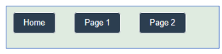

import dash
from dash import dcc, html
import dash_bootstrap_components as dbc
app = dash.Dash(
__name__,
use_pages=True, # scan pages/ folder for registered pages
suppress_callback_exceptions=True, # prevent errors for components not yet on screen
title="Multi-Page-App"
)
server = app.server # expose the Flask server — required for Render/gunicorn deploymentSetting Up Multiple Pages
This section introduces how to structure and build multi-page Dash applications. Students begin by organizing a project shell with an app.py entry file, a pages/ folder for page layouts, and an assets/ folder for shared CSS. Using dash.register_page(), each page is defined with a layout and a URL path, while the main app layout in app.py includes a navigation bar and a dash.page_container that automatically renders the selected page.
The project demonstrates two distinct page designs:
- Page 1 implements a responsive grid layout using custom CSS classes for top, middle, and footer blocks.
- Page 2 introduces interactivity and API integration with a callback that retrieves and displays random cat facts from a public API using
requests.
By the end, students can design organized, scalable Dash apps with multiple pages, shared styling, and dynamic content powered by callbacks and APIs.
Project Structure
Building the Project Shell
Before writing any Dash code, set up a clean and organized project structure. A well-organized project makes the application easier to maintain, extend, and style as it grows.
my_dash_app/
│
├── app.py ← main entry point; run this file to start the app
├── pages/ ← one .py file per page
│ ├── home.py
│ ├── page1.py
│ └── page2.py
│
└── assets/ ← Dash automatically loads CSS from here
└── style.cssKey rules:
app.pylives at the root of the project.pages/holds one Python file per page; Dash scans this folder automatically whenuse_pages=True.assets/holds CSS, images, and other static files; Dash loads them automatically without any import statements.- Only
app.pyshould containapp.run(...)— never add a run command inside a page file.
Initializing the App
use_pages=True— tells Dash to automatically discover and register all pages in thepages/folder. Without this, Dash is a single-page app.suppress_callback_exceptions=True— when a user is on Page 1, Page 2’s components do not exist in the DOM yet. Without this flag, Dash raises errors for callbacks that reference those absent components.server = app.server— exposes the underlying Flask server object so that gunicorn (and Render.com) can start the app. This line is required for deployment.
The original code had supress_callback_exceptions=True (one p). The correct spelling is suppress_callback_exceptions=True. A misspelled keyword argument is silently ignored by Python — exception suppression would not be active.
Registering Pages
dash.register_page()
Each file in pages/ calls dash.register_page() to declare itself as a page, then defines a layout variable with its content.
# home.py — the app's home page (root URL)
import dash
from dash import html
dash.register_page(__name__, path="/")
layout = html.Div([
html.H2("Welcome to the Home Page"),
html.P("This is a simple multipage Dash project.")
])# page1.py
import dash
from dash import html
dash.register_page(__name__, path="/page1", name="Page 1")
layout = html.Div([...])# page2.py
import dash
from dash import html
dash.register_page(__name__, path="/page2", name="Page 2")
layout = html.Div([...])The original code used __name_ (single trailing underscore). __name__ (double underscore on each side) is the correct built-in Python variable. __name_ is undefined and raises a NameError at import time.
Key arguments to dash.register_page():
| Argument | Purpose | Example |
|---|---|---|
__name__ |
Uniquely identifies the page by its module | __name__ |
path |
Sets the URL for this page | path="/page1" |
name |
Sets the display name for navigation links | name="Page 1" |
The App Layout (app.py)
Styling with style.css
Global Styles
The assets/style.css file applies to every page in the app. The stylesheet below sets a background color, typography defaults, and transforms plain hyperlinks into styled button-like elements.
In CSS, !important forces a property to override any conflicting rules, regardless of selector specificity. Use it only when necessary — overuse makes stylesheets difficult to reason about.

body {
background-color: #DFEBE0 !important; /* force green-tint background even if Bootstrap overrides it */
font-family: Arial, sans-serif;
}
h2 {
color: #2c3e50;
}
p {
font-size: 16px;
line-height: 1.4;
}
/* Style all <a> tags as button-like elements */
a {
display: inline-block; /* allow padding to apply */
margin: 18px;
text-decoration: none; /* remove underline */
border: 2px solid #ffffff;
border-radius: 6px;
padding: 10px 20px;
background-color: #2c3e50;
color: #ffffff;
}
a:hover {
text-decoration: underline;
background-color: #65Ab6E; /* green on hover */
}Page 1: Grid Layout
Layout File
Page 1 organizes content into three zones using a combination of Flexbox (for vertical stacking) and CSS Grid (for the two-column middle section).
import dash
from dash import html
dash.register_page(__name__, path="/page1", name="Page 1")
layout = html.Div([
html.Div("Top Row: with 1 Column", className="block block-top"),
html.Div([
html.Div("Middle Left", className="block"),
html.Div("Middle Right", className="block")
], className="row-2"),
html.Div("Footer", className="block block-footer")
], className="page1-grid")CSS Classes for Page 1
/* Outer container: stacks the three zones (top, middle, footer) vertically */
.page1-grid {
display: flex;
flex-direction: column; /* stack children top → middle → footer */
padding: 12px;
gap: 12px; /* space between zones */
}
/* Middle zone: splits into two equal side-by-side columns */
.row-2 {
display: grid;
grid-template-columns: 1fr 1fr; /* two equal fractions of available width */
gap: 12px;
}
/* Shared block appearance */
.block {
border: 2px dashed #cbd5e1;
border-radius: 8px;
background-color: #F5F7FA;
color: #334155;
min-height: 120px;
display: flex;
align-items: center; /* vertically center content */
justify-content: center; /* horizontally center content */
font-weight: 600;
}
/* Modifier classes — adjust height only */
.block-top { min-height: 150px; }
.block-footer { min-height: 80px; }
/* Responsive: collapse to single column on screens narrower than 768px (tablets/phones) */
@media (max-width: 768px) {
.row-2 { grid-template-columns: 1fr; }
}CSS concepts used here:
.page1-grid—display: flex; flex-direction: columnstacks the three zones vertically with consistent gaps..row-2—display: grid; grid-template-columns: 1fr 1frsplits the middle section into two equal columns.1frmeans “one fraction of available space.”.block— shared styling applied to all content zones: dashed border, rounded corners, centered content.@media (max-width: 768px)— a media query that collapses the two-column layout to a single column on narrow screens (tablets and phones).
Page 2: Callback and API
Layout and Callback
Page 2 demonstrates a live API call triggered by a button click. The entire page — layout and callback — lives in a single page2.py file, with no app.run(...).
from dash import html, register_page, dcc, callback, Output, Input
import requests
register_page(__name__, path="/page2", name="Page 2")
layout = html.Div([
html.H2("Page 2", className="page-title"),
html.P("Click to fetch a random cat fact from a public API",
className="page-subtitle"),
html.Button("Get Cat Fact", id="btn-cat", n_clicks=0),
dcc.Loading(html.Div(id="cat-fact"))
# dcc.Loading wraps the output — shows a spinner while the callback is running
], className="page2-wrap")
@callback(
Output("cat-fact", "children"),
Input("btn-cat", "n_clicks"),
prevent_initial_call=True # do NOT fire on page load (n_clicks=0); wait for a real click
)
def get_cat_fact(n):
try:
r = requests.get("https://catfact.ninja/fact", timeout=5)
r.raise_for_status() # raise on HTTP error
fact = r.json().get("fact", "No fact found.") # safely extract the fact
return html.Div(fact)
except requests.RequestException as e:
return html.Div(f"Error contacting API: {e}") # show a readable error messageprevent_initial_call=True is essential here. Without it, Dash fires the callback immediately on page load with n_clicks=0 — calling the API before the user has done anything. Adding prevent_initial_call=True ensures the callback only runs on an actual button click.
Page 2 CSS
/* Page 2 container */
.page2-wrap {
max-width: 840px;
margin: 0 auto; /* horizontally center the content */
padding: 16px;
}
.page-title {
font-size: 28px;
color: #1f2937; /* dark slate */
margin-top: 6px;
}
.page-subtitle {
color: #475569; /* medium slate — lighter than the title */
margin-top: 14px;
}